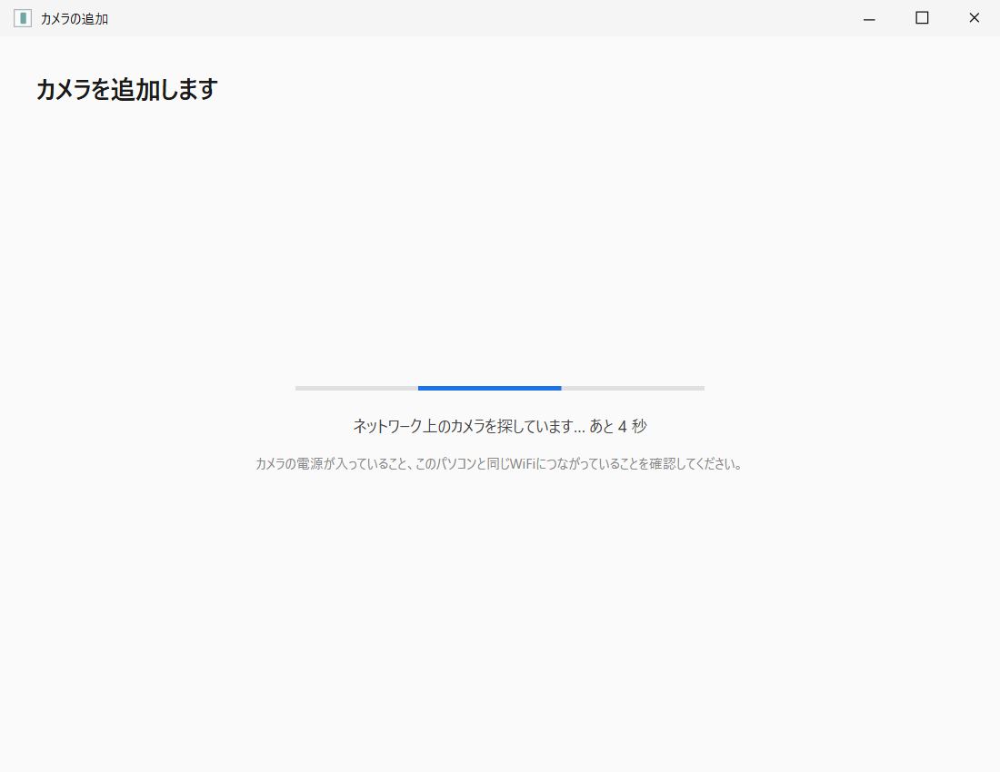
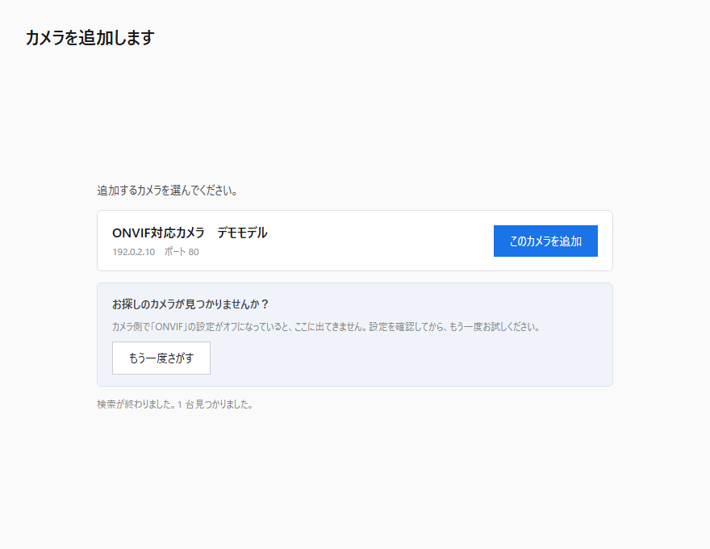
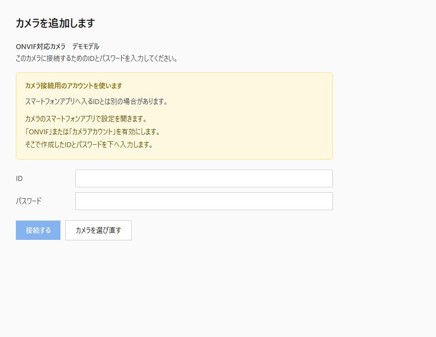
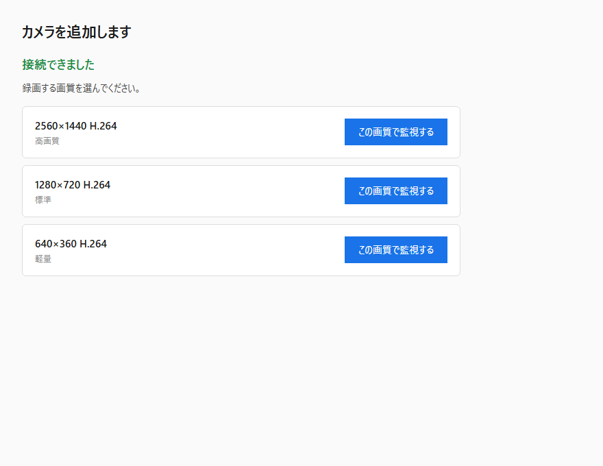
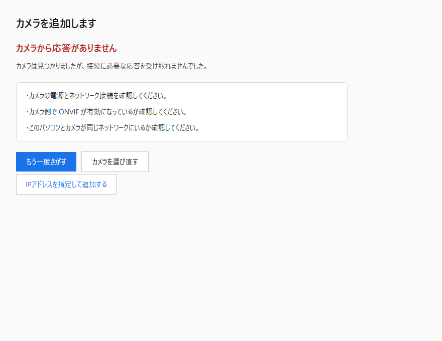
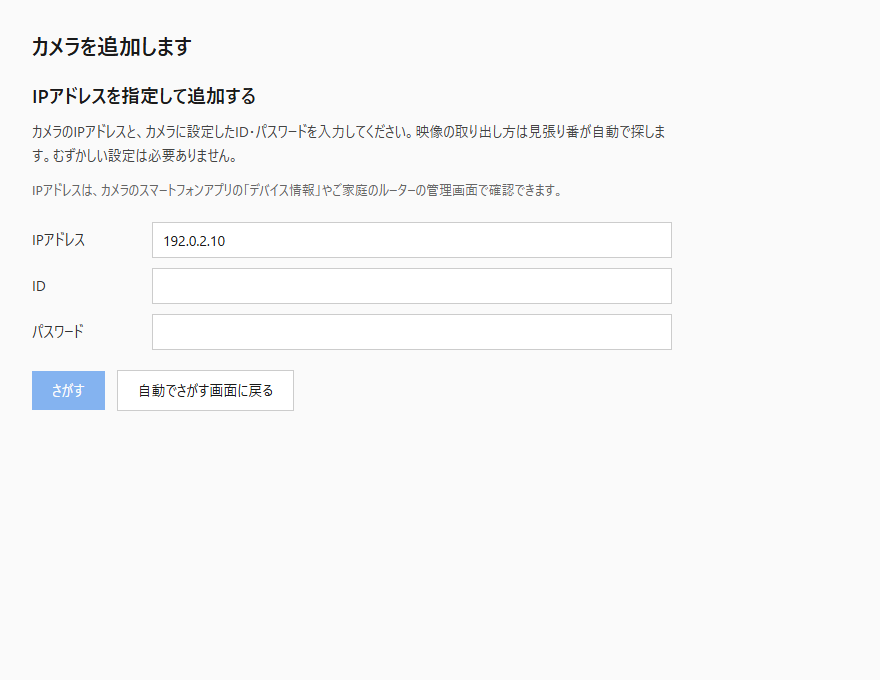
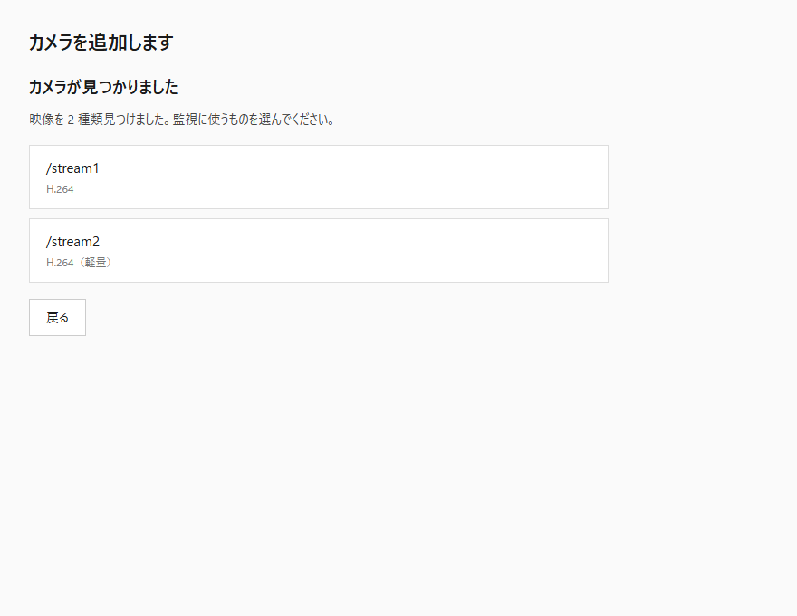
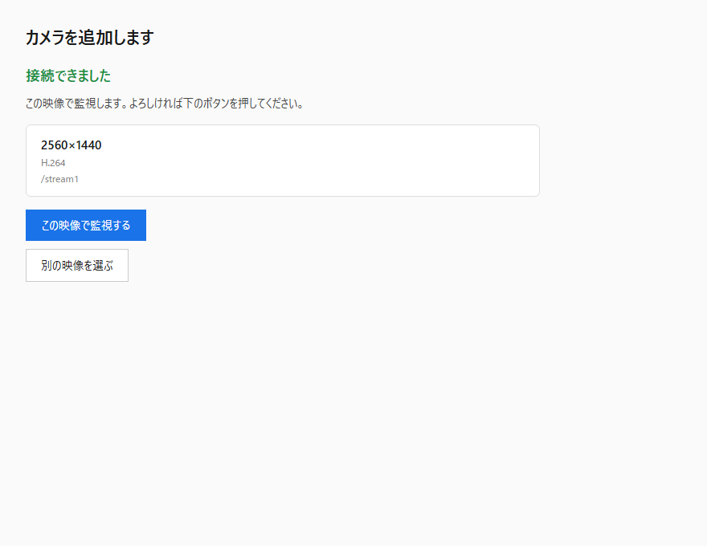

Manual 01
公開準備中
はじめ方
ZIPを展開して、カメラの映像が出るまで。自動追加の4画面と、失敗時・手動追加の4画面に分かれる、合わせて8画面を案内します。
現行画面の配置・文言を再現した説明図アプリから撮影したスクリーンショットではありません画像内のカメラ・IP・アカウントは公開用データ
Before you start
用意するもの
- Windows 10 バージョン1809以降、またはWindows 11の64bitパソコン
- ONVIFに対応し、H.264で映像を送れるネットワークカメラ
- カメラと同じ家庭内ネットワークへ接続したパソコン
- カメラ本体へ接続するためのIDとパスワード
スマートフォン用アプリへログインするメールアドレスと、カメラへ接続するIDは別の場合があります。 たとえばTapoでは、カメラの設定にある「カメラアカウント」で作成します。
Step 0
ZIPを展開して起動する
- 入手したZIPを右クリックし、「すべて展開」を選びます。
- 展開したフォルダを「ドキュメント」「デスクトップ」など、書き込める場所へ置きます。Program Filesの中には置きません。
- 展開先にある「見張り番」を起動します。.NETを別に入れる必要はありません。
- Windowsの警告が出た場合は、正規の入手元であることを確認してから判断します。見張り番は現在コード署名なしです。
Step 1–2
カメラを自動で探して選ぶ

- 進み具合が表示されます。ここでは操作せず待ちます。
- カメラの電源と、パソコンと同じWi‑Fi・LANにいることを確認します。
- ゲストWi‑FiやVPNでは見つからない場合があります。

- 自分のカメラのメーカー名と型番を確認します。
- 「このカメラを追加」を押します。
- 出てこないときは、カメラ側のONVIF設定を確認して「もう一度さがす」を押します。
Step 3
カメラ接続用のIDとパスワードを入れる

- 黄色い案内で、カメラ接続用アカウントの作り方を確認します。
- IDとパスワードを入力します。説明用画像ではどちらも架空または空欄です。
- 「接続する」を押します。登録済みカメラはWindows暗号化で保存した情報を使えます。
Step 4
録画に使う画質を選ぶ

- 「2560×1440」のような解像度と「H264」を確認します。
- 軽さと保存容量を優先するなら小さい解像度を選びます。
- 人物や細部を残したいなら大きい解像度を選びます。パソコンと保存容量の負担は増えます。
If connection fails
接続できないときは、原因と次の行動が出る

- 赤い見出しで、どの段階で止まったかを確認します。
- 白い欄の対処を上から順に確認します。
- 自動探索に応答しないカメラは「IPアドレスを指定して追加する」へ進めます。
詳しい切り分けは「カメラが見つからない」にまとめています。
Manual route
自動で見つからないカメラをIPアドレスから追加する

- カメラのIPアドレスを入れます。カメラアプリのデバイス情報やルーターで確認します。
- カメラ接続用のIDとパスワードを入れます。
- 「さがす」を押すと、見張り番が一般的な映像の取り出し方を順番に試します。


Ready
映像が表示されたら設定完了
監視画面が開き、状態が「監視中」になれば初回設定は完了です。 初回だけ、デスクトップアイコンとWindows起動時の自動開始を確認します。後から設定画面で変更できます。